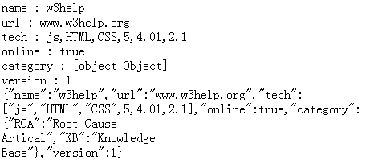
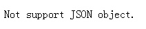
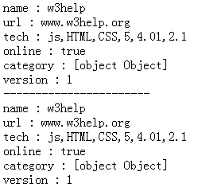

JSON 是一种数据交换格式，RFC 4627 对 JSON 进行了详细描述。
根据 ECMA-262（ECMAScript）第 5 版中描述，JSON 是一个包含了函数 parse 和 stringify 的简单对象。 parse 函数用来解析一个 JSON 文本（一个 JSON 格式的字符串）到一个 ECMAScript 值（例如 JSON 对象被解析为 ECMAScript 对象， JSON 数组被解析为 ECMAScript 数组，其它类型以此类推）；stringify 则相反，它是将一个 ECMAScript 值解析为一个 JSON 格式的字符串， 比如将一个 ECMAScript 对象解析为一个 JSON 对象的字符串。
关于 JSON 的详细信息，请参考 RFC 4627 和 http://json.org。
关于 JSON 对象的更多信息，请参考 ECMA-262 5th Edition 中 15.12 The JSON Object。
IE6 IE7 IE8(Q) 不支持 JSON 对象。
使用了 JSON 对象的脚本代码在 IE6 IE7 IE8(Q) 中运行的时候可能会抛出异常，导致功能失效。
| IE6 IE7 IE8(Q) |
|---|
JSON 对象是在 ECMAScript 第 5 版中实现的，此版于 2009 年 12 月发布；IE6 IE7 与 IE8(Q) (IE8(Q) 相当于 IE 5.5) 发布时间比较早，没有在其 Javascript 引擎中实现该对象。
分析以下代码：
<script type="text/javascript"> window.onload = function(){ var info =
document.getElementById("info"); if(window.JSON){ var jsonStr = '{"name": "w3help", "url":
"www.w3help.org", "tech": ["js", "HTML", "CSS", 5, 4.01, 2.1],' + '"online": true, "category": {"RCA":
"Root Cause Artical", "KB":"Knowledge Base"},' + '"version": 1}', p, w3help; w3help =
JSON.parse(jsonStr); for(p in w3help) info.innerHTML += p + " : " + w3help[p] + "<br/>";
info.innerHTML += JSON.stringify(w3help); } else info.innerHTML = "Not support JSON object."; }
</script> <div id="info" style="width:350px;"></div>
以上代码首先探测是否在 window 下存在 JSON 对象，然后简单测试了 JSON 对象的 parse 和 stringify 函数并输出（反）解析结果。执行代码，各浏览器中表现如下：
| IE8(S) Firefox Chrome Safari Opera | IE6 IE7 IE8(Q) |
|---|---|
|  |  |
可以使用 window.eval() 或 new Function(){} 的方式解析 JSON 格式字符串。如：
<script type="text/javascript"> window.onload = function(){ var info =
document.getElementById("info"), jsonStr = '{"name": "w3help", "url": "www.w3help.org", "tech": ["js",
"HTML", "CSS", 5, 4.01, 2.1],' + '"online": true, "category": {"RCA": "Root Cause Artical",
"KB":"Knowledge Base"},' + '"version": 1}', p, w3help; //使用两种简单的方式解析 JSON 格式字符串 json1 = eval("(" +
jsonStr + ")"), json2 = (new Function("return " + jsonStr))(); for(p in json1) info.innerHTML += p + " :
" + json1[p] + "<br/>"; info.innerHTML += "-----------------------<br />"; for(p in json2)
info.innerHTML += p + " : " + json2[p] + "<br/>"; } </script> <div id="info"
style="width:350px;"></div>
各浏览器中表现如下：
| 所有浏览器 |  |
|---|
可见，以上代码可以作为 JSON.parse() 跨浏览器的简单替换方案。同样 JSON.stringify() 可以通过判断类型加算法实现，这里不再赘述。
需要注意的是，这种解析 JSON 格式字符串的简单实现存在安全问题，被插入的恶意 JSON 字符串（比如获取用户的 cookie 信息）可能被解析并执行。 可以使用一些经过验证的安全成熟的的解决方案，例如 json2.js 中的 JSON.parse() 或 jQuery.parseJSON()。
| 操作系统版本: | Windows 7 Ultimate build 7600 |
|---|---|
| 浏览器版本: |
IE6
IE7 IE8 Firefox 3.6.10 Chrome 7.0.544.0 dev Safari 5.0.2(7533.18.5) Opera 10.62 |
| 测试页面: |
JSON.html
JSON_solution.html |
| 本文更新时间: | 2010-10-11 |
JSON parse stringify